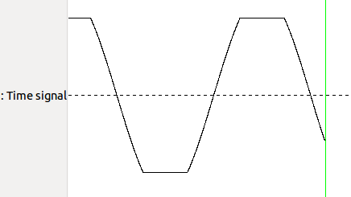

def setUp(self): import os ov_binany_path=os.environ['OV_BINARY_PATH'] self.terminal = App.open("xterm -e " + ov_binany_path +"/openvibe-designer.sh --no-session-management --play " + ov_binany_path +"/share/openvibe/scenarios/box-tutorials/crop.xml") while not self.terminal.window(): wait(1) def testRunOgreVisual(self): assert(exists()) def tearDown(self): if self.terminal.window(): App.close(self.terminal) self.terminal= None